Overview
In these tabs you will find guides to popular 3D printer upgrades.
Sometimes it is easier to reference a static page rather than a video, especially for wiring diagrams and firmware changes. A webpage also provides the opportunity to be updated as things change whereas a video potentionally becomes inaccurate.
BLtouch
Manufacturer's website: Antclabs BLtouch
Purchase links:
As well as the actual BLtouch, an extension cable is required to go back to the mainboard. For most printers, this should be at least 1.5m. For larger prints, 2m is recommended.
These links are for genuine BLtouch from Antclabs. Various clones exist (usually called '3D Touch') but from what I have seen their quality is mixed. For some people they work perfectly and for others they experience nothing but trouble. Please note that BigTreeTech and Creality are both endorsed redistributers for Antclabs.
What it does:
A BLtouch is an auto bed levelling probe. When attached to the print head, it can be moved in a grid pattern around the bed, measuring the height at each probing point and then creating a contour map of the bed. When a new print begins, this contour map can be applied to the first layer, moving the nozzle up and down as necessary to compensate for a warped or uneven bed.
Advantages:
A BLtouch is very convenient in that it removes the need to manually level your 3D printer bed. In situations where the bed is warped, manual levelling will never give a perfect first layer and an ABL probe is the only means to achieve this. Compared to other contactless ABL probes, a BLtouch physically touches the bed with its pin when probing. Therefore it doesn't care what the bed surface is or it's current temperature. A BLtouch allows the print surface to be swapped or changed without recalibration.
Disadvantages:
There is an idea that a novice using ABL with their first printer prevents them learning the basic skill of manually levelling the bed, and therefore will not have the same understanding and problem solving capabilities as other users.
Compared to other ABL probes, a BLtouch requires a slight amount of extra wiring. If the mainboard does not have a dedicated 'probe' port or spare PWM output (Creality V1.X boards), a 'pin27 adaptor' is required.
I have made many BLtouch guide videos in the past, but this one aims to be generic enough to apply to almost any 3D printer. This guide has a companion video with many of the concepts illustrated: BLtouch for any 3D printer - Comprehensive step by step guide
For this guide, we will start with the physical mounting of the BLtouch, then cover wiring, firmware changes, calibration, slicer changes, customisation and troubleshooting.
Physical mounting
A BLtouch needs to be mounted to the print head of the machine. Ideally the BLtouch (or any other ABL probe) will be mounted as closely to the nozzle as possible, but not so close it fails from exposure to heat. A silicone sock over the heater block can assist here. The BLtouch should be secured tightly. Any play or wobble will destroy accuracy and repeatability. Other considerations when mounting are making sure the BLtouch is not so close to the hot end that it suffers damage from heat, and that its placement does not interfere with homing.
As the BLtouch is very popular, there is a wide range of printed mounts available on Thingiverse and other 3D file sharing sites. Below are some examples:
The vertical mounting height of the BLtouch tip relative to the tip of nozzle is very important for accuracy. Antclabs have a diagram on their site and advise a target height of 2.3 to 4.3mm.

With the power off, lower the print head down until the nozzle is resting on the bed. If your BLtouch mount is adjustable, you can put an appropriately sized (3mm is ideal) allen key flat on the bed and slide the BLtouch down until the tip touches. For a non adjustable mount, washers can be use to shim the position downwards to spec. If the tip is sitting too low, you need a new mount to prevent the tip hitting the bed/printed part and being damaged.

Wiring loom
Hopefully you saw the note at the top of the page and purchased a wiring extension loom long enough to go from the BLtouch back to the mainboard. Alternately, you can make your own if you have the appropraite connectors and crimping tools. You want to ensure the loom is protected and can't snag on the moving printer parts. At a minimum, it should be tied to the existing loom to prevent it being caught. Ideally, it should be enclosed in some sort of sleeve or wrap.
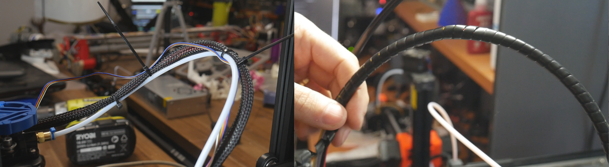Wiring to mainboard
A BLtouch requires 5 wires. Three are used to control it (red, yellow and brown), and the remaing two are used to read the trigger signal from it (black and white). Sometimes extension looms use different colours, such as the Creality loom which substitutes blue for brown.
Pay attention to wiring diagrams! The following diagram was created for a video guide for the Creality V4 32 bit mainoards. The comments are littered with people who assumed the Creality extension loom would match the Creality board, connected the BLtouch incorrectly and blew up their mainboard. Never assume the extension loom you are using matches the input to the mainboard (even if they are both Creality).

Here is a break down of the pins:
- Red: 5V power to BLtouch. (Some mainboards supply 3.3V and the BLtouch can be configured to operate with this logic level).
- Brown: Ground to BLtouch. In conjuction with the red wire provides power.
- Yellow: Control signal from firmware to BLtouch. Uses pulse width modulation (PWM) to control the BLtouch, the same way as a servo is controlled with PWM.
- White: Trigger signal from BLtouch to mainboard.
- Black: Ground for trigger signal from BLtouch to the mainboard.
Most modern 32 bit mainboards have dedicated ports for a BLtouch, typically labelled 'BLtouch', 'probe' or 'servo'. This may be a three pin port, intended for the the red, brown and yellow wires only, or a five pin port, intended for all five wires.
If your mainboard does not have a dedicated BLtouch port, you can most likely still use it, but you will likely need to consult the manual or data sheet for your board or processor. 5V and GND can be be taken from any identified spare pins. All that you need is a spare PWM pin. PWM stands for pulse width modulation, and involves a logic signal being cycled on and off at various duty cycles. This method is used to set the angle on a servo, and is also used to control the BLtouch through the yellow wire.
With some basic knowledge, you can examine the datasheet for your mainboard processor to see which spare pins support PWM. This is demonstrated in the video at the top of the page.
Do I need a pin27 board?
Mainboards like the earlier 8 bit Creality V1.X models had very little spare input/output pins. In fact, there was no spare PWM pins at all, so pin27 (usually used for the LCD buzzer) was hijacked with a pin27 board to provide a means of controlling the BLtouch (which meant losing the buzzer). Any modern 32 bit board has enough spare pins that it does not need a pin27 board. Despite this, I have seen BLtouch packages sold to suit the Creality V4 32 bit board that still include a pin27 board when this mainboard does not require it. I can only assume this is a cash grab and way to offload old pin27 board stock. While you can probably still wire a BLtouch to this board using a pin27 board, why would you? You are ignoring the dedicated port and are adding needless complexity.
Should I plug the black and white BLtouch wires into the Z endstop plug or the dedicated plug?
The honest answer is that either of these options work. The firmware just needs an input pin to receive the trigger signal from the BLtouch and it does't care which pin it is.
Personally, I prefer to use the normal Z axis endstop port. This is because it simplifies the changes needed in the firmware (both versions covered below). It also prevents any chance of leaving the old Z endstop switch connected and potentially interfering.
Marlin firmware changes
Firstly, if you are new to firmware, I have a few beginner guides, but Updated Marlin firmware setup guide - VS Code and Auto Build Marlin is probably the best place to start as it goes over installing the software and how to use the example configurations to get a good starting point for your printer.
Mandatory changes
Once you have this baseline, the following changes are mandatory for a BLtouch:
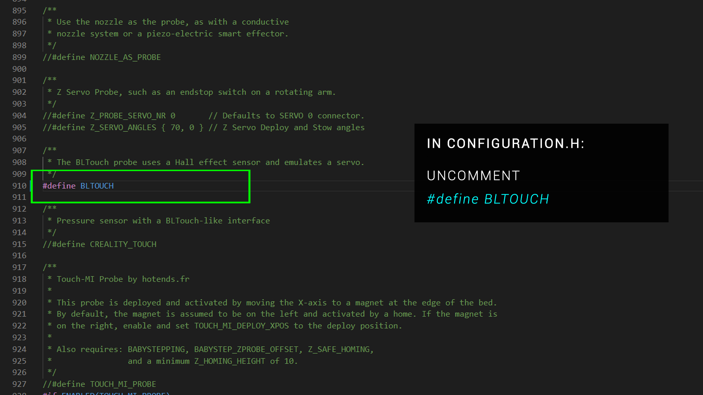 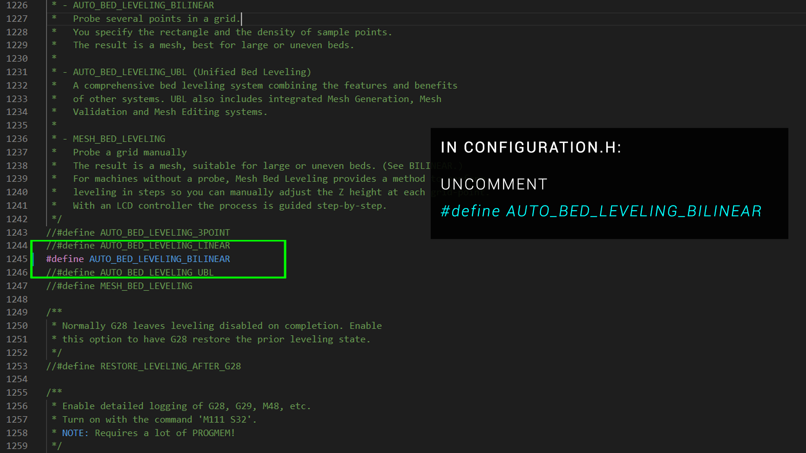 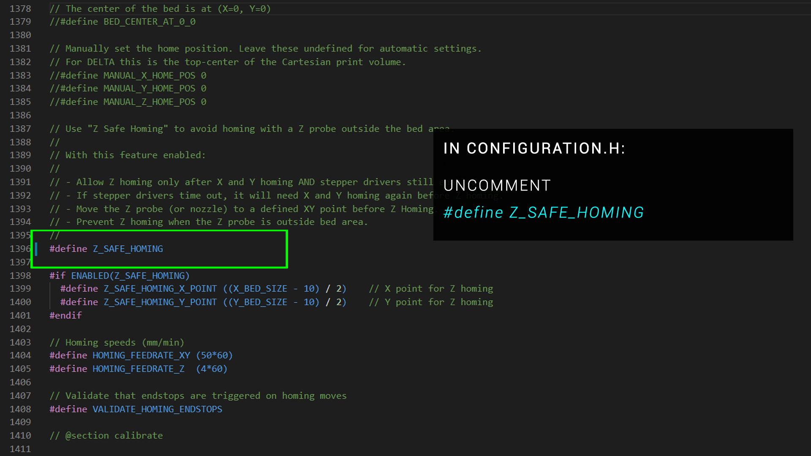Previously, when using a pin27 board with a Creality V1.x mainboard, it was required to add a custom line to the firmware to account for this. Thanks to the Marlin developers and contributers, this is now automatically in place in the pins file.
If you are connecting the black and white BLtouch wires to the Z axis endstop port
The following should already be in place by default:
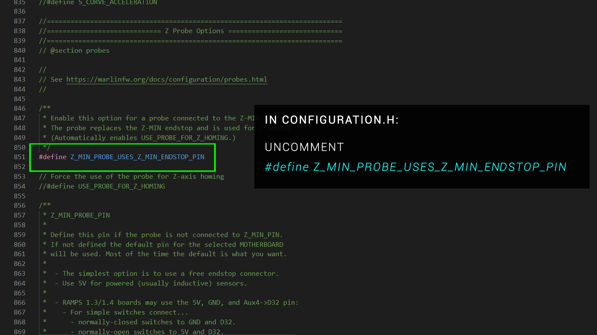If you are connecting the black and white BLtouch wires to a dedicated port
You will need to look up the name of the pin that the port uses, and then make the following changes:
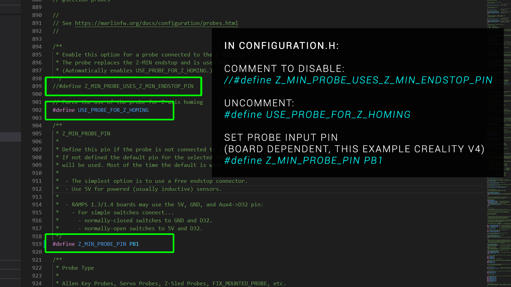If you are using a custom PWM pin for the BLtouch yellow wire
You will need to look up the name of your pin and then enter it in the pins file for your board. Make sure this is the only reference to this pin. Uncomment other references to avoid conflicts.
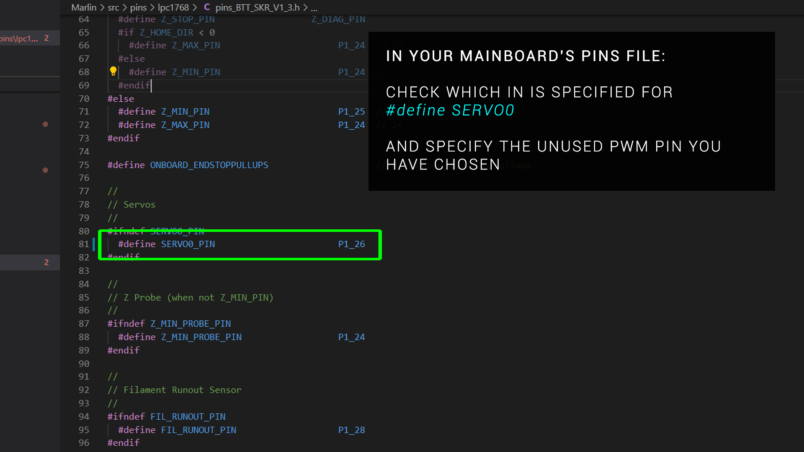Optional changes
If you are using a traditional LCD, you can enable an ABL specific sub menu:
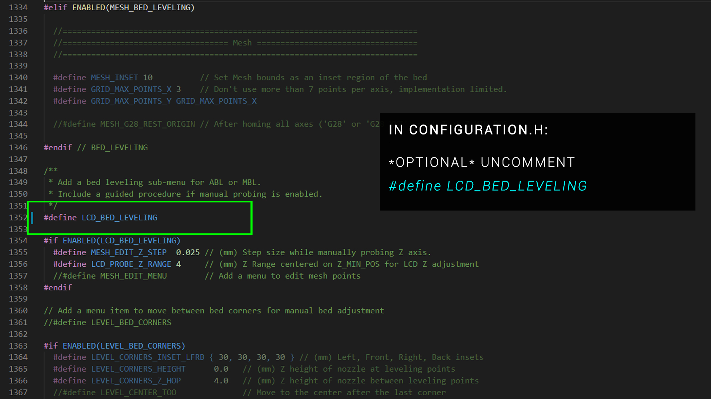For a much easier way to calibrate the Z offset of your probe (covered in the video below), enable the following:
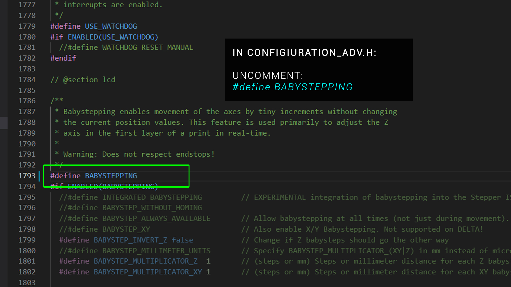 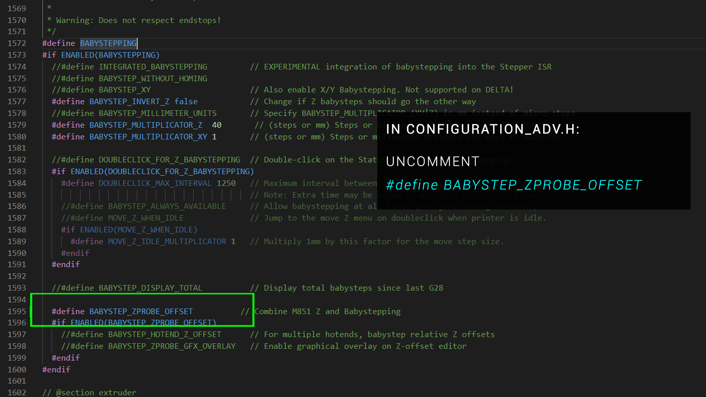 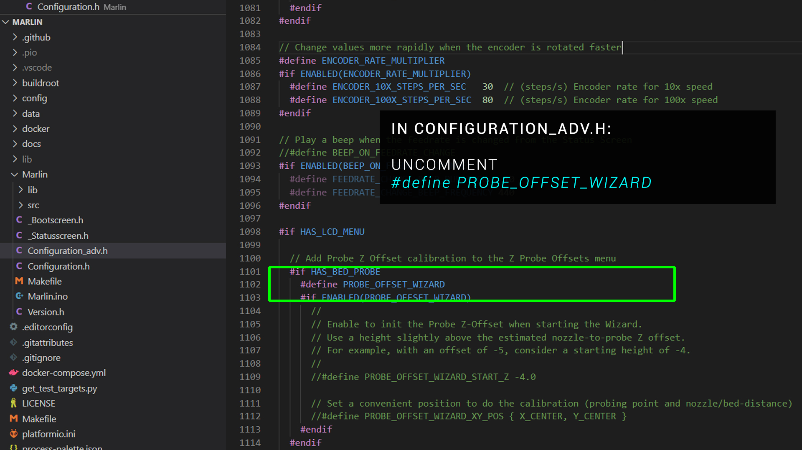If you have already measured your X and Y probe offsets, you can enter them now. This is not mandatory, however, as it can be done after the firmware is updated. More on probe offsets later.
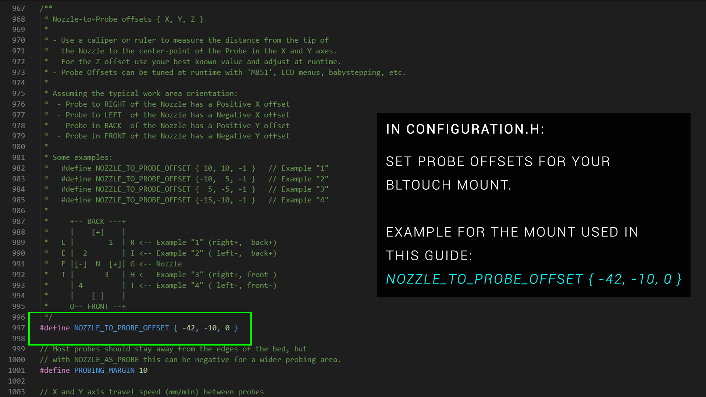Calibration
Once you have connected everything and flashed your updated firmware, there is still some calibration regarding the offset of the probe. Fortunately I have dedicated video on this topic:
In summary, we need to do the following:
- Measure and input our X/Y probe offsets. This can be done using the M851 gcode command over terminal or via the LCD screen. Even if you previously entered this when compiling firmware, double check the values are correct. When changing offsets, don't forget to save to EEPROM.
- Adjust the Z offset of the probe to achieve the perfect amount of squish on the first layer. You can use the Marlin Z offset wizard for this and/or do a live adjustment as the first layer goes down. In either case don't forget to save this value to EEPROM so it stays persistent.
Modes of operation and slicer changes
Before using ABL, the printer must be homed. Please note that in most cases, the BLtouch has replaced the Z axis endstop as the means of the printer knowing when Z is approaching zero.
The first time you home the printer, it is safest to start with the nozzle a long way above the bed. Then use your hand to trigger the probe in mid air. If there is a problem and the trigger doesn't work, this will give you a chance to kill the power before a collision. Then consult the troublshooting section lower on the page.
After this, a G29 command will initiate the probing of the bed. Optionally saving to EEPROM will then store the probed mesh.
It is best to heat up the bed to printing temperatures before probing it. This is due to the bed surface expanding and/or warping when hot. We want to match the printing conditions as closely as possible.
We have two options on how we utilise the BLtouch:
Probe before every print
This option has the advantage of providing the most accurate result and suits printers that have a less than steady bed that may shift between prints. The disadvantage is the added time to the start of the print.
To do this, G29 (ABL) must be placed on the line after G28 (homing) in the start gcode section of your slicer. G28 cancels any probed meshes so it must be in this order.
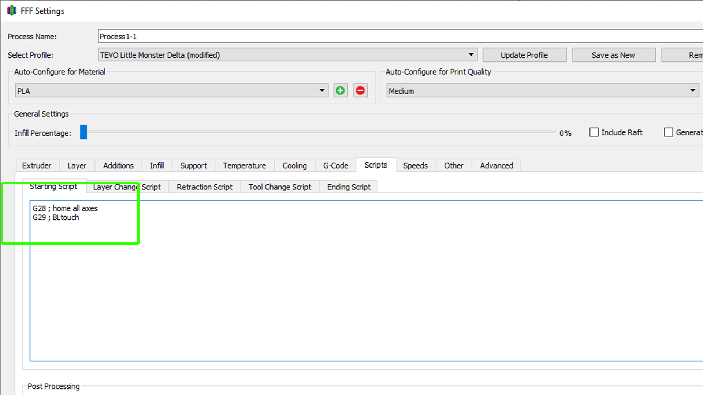Probe once and restore the saved mesh at the start of the print
Alternatively, if your bed is stable, you can home with G28, then probe the bed to create a mesh with G29, followed by saving the mesh to EEPROM with M500. All of this can also be done with LCD controls instead of gcodes. In your slicer start gcode, you can add M420 S1 on the line AFTER G28, which will load the previously saved mesh to use for compensation in the current print.
As neccessary, from time to time you can re-probe the bed and store the mesh to maintain accuracy.
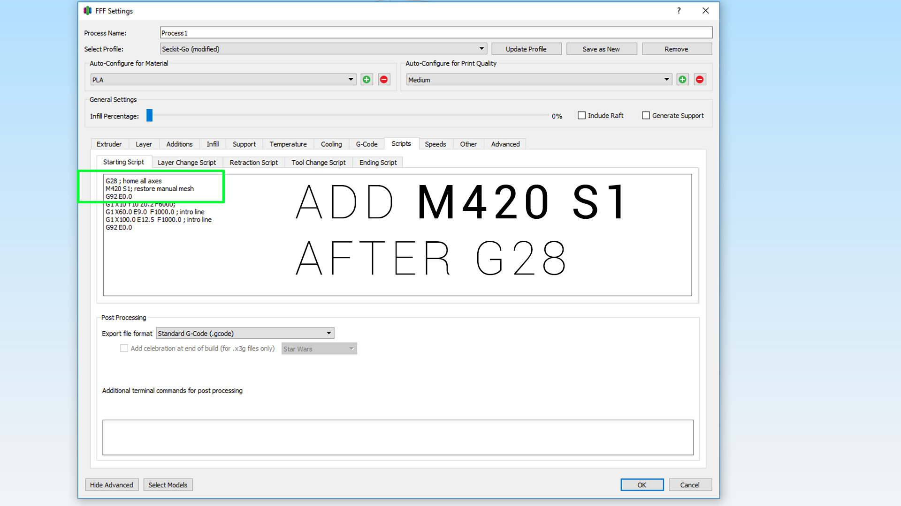Customisation
By default, the probing grid is 3 x 3. For small printers this is fine but you may want to increase the resolution at the expense of a longer probing sequence. This can be changed in the firmware:
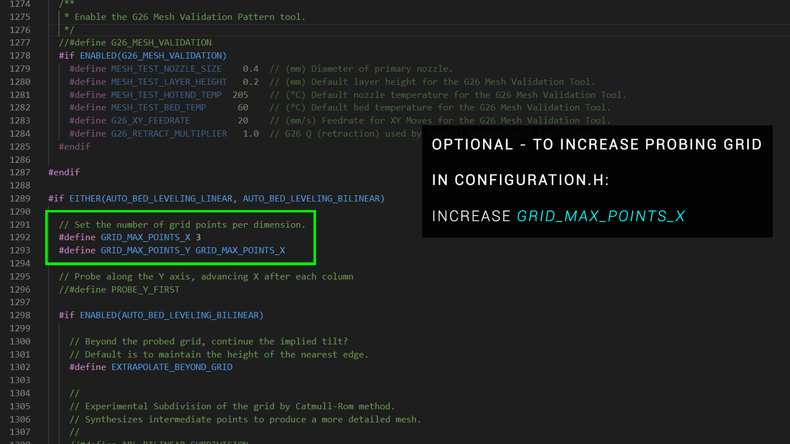By default, the probing sequence is fairly slow. Again, we can customise this in the firmware. Your choices here will be a trade off between speed and accuracy:
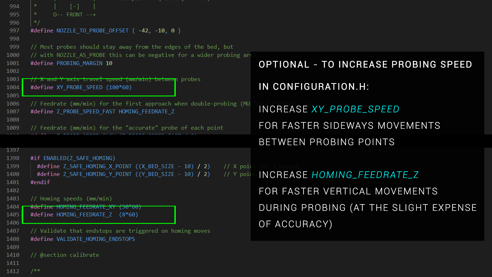By default, the boundaries of the probing grid will be offset towards the position of the probe relative to the nozzle. I personally prefer a symmetrical probing grid. In the firmware, you can set manual boundaries for the grid. Just keep your probe X/Y offset in mind. You don't want to request probing 20mm from the edge when the probe is 40mm to the side of the nozzle. Best case, you receive an error. Worst case, the probe misses the bed and the nozzle collides with the bed.
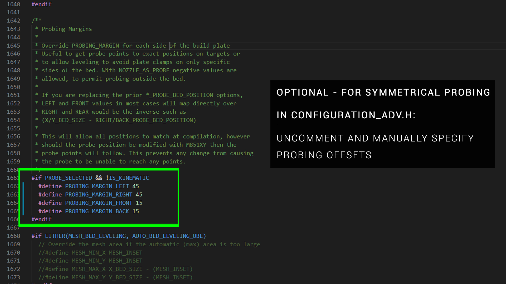There is also a parameter called fade height, that can be set from the LCD or with the M420 Z gcode command. The first layer will not actually be perfectly flat, due to the compensation applied to match the measured bed contours. We don't necessarily want each layer to match this contour for the rest of the print, however. Fade height is the vertical distance in which the printer will transition between following the contours of the bed to printing in a perfectly flat plane. Remember to save to EEPROM after changing the fade height.
Troubleshooting
There's a lot to get right, which means there is also a lot that can go wrong. Fortunately, I have a full page dedicated to BLtouch troubleshooting elsewhere on this site.
Neopixels - Digital RGB LEDs
Manufacturer's website: Adafruit Neopixels
Purchase links:
Neopixels
Supporting parts
- EZneo universal 5V power kit
- Adjustable buck converter (Amazon)
- Adjustable buck converter (Aliexpress)
- Adjustable buck converter (Banggood)
What it does:
RGB LEDs are lights that can be set to almost any colour by mixing different magnitudes of red, green and blue. Neopixels are digital/addressible RGB LEDs, which means each LED in a strip can be set to a unique colour. This means you can have rainbow effects and even animations. Neopixels allow you to illuminate your 3D printer and/or printing area in a creative way. Neopixels are a specific brand name for Adafruit WS2812B addressable LEDs, but the term has become ubiquitous when discussing digital RGB LEDs and 3D printing.
Advantages:
Neopixels can be used to illuminate the print area for timelapses. They can also be configured to change their colour depending on the printer state. For example, glowing red to indicate the printer is hot or green to indicate a print is complete.
Disadvantages:
For the most part this is a superficial mod and will not add to the function of the printer.
This guide has a companion video with many of the concepts illustrated: RGB Neopixels for any 3D printer - Marlin, Klipper and RRF guide
Physical Mounting
In your have purchased Neopixels in a long roll, typically double side tape is used to stick the strip somewhere on the frame. If using a Neopixel product formed as a rigid PCB, this will typically have mounting holes which can be used in conjuction with screws and T nuts to bolt it to the frame. Both options are very easy but depending the the adhesive tape used, the rigid option will be more secure in the long term.
Take care to ensure both the Neopixel strip and your wiring back to the mainboard are secure and clear of any moving parts. For machines built with V slot extrusions, you can run the wires inside one of the trenches to keep them out of the way.
Wiring
Neopixels are digital and therefore only require three wires.
- Red: 5V power
- Black: Ground
- Blue / White : Data signal
Never assume the loom/wires you are using matches ports of the mainboard. Check the three wires before connecting to avoid damaging your Neopixels or mainboard. De-pin and arrange as necessary.
Wiring: Data pin
A single data pin is needed to set the colour of an entire Neopixel strip. The microcontroller or processor controlling the Neopixels should know how long the strip is before sending a data command. It can then address a colour/brightness command for each pixel in the strip. The first pixel will read this, set its own color, then pass on the list of instructions to the next in the strip minus its own instruction. The process repeats down the chain of LEDS until each has received their instruction.
A very simplified example might be a four LED strip that the user wants to set to red, orange, yellow, green.
- The MCU sends 'red, orange, yellow, green' to the first pixel in the strip
- The first pixel sets itself to red, then sends 'orange, yellow, green' to the next pixel in the strip.
- The second pixel sets itself to orange, then sends 'yellow, green' to the next pixel in the strip.
- The third pixel sets itself to yellow, then sends 'green' to the next pixel in the strip.
- The fourth pixel sets itself to green. The strip is now set to red, orange, yellow, green.
Wiring: Power pins
The power wiring for Neopixels is very simple on paper but needs care in reality. This is because the required current increases with each pixel added to the strip. Each pixel might draw somewhere between 60-80mA, therefore once the strip increases in length beyond a certain length, it will need more power than the onboard 5V regulator of the mainboard can supply.
The available current capacity for Neopixels will vary depending on the mainboard and other connected 5V hardware (BLtouch, 5V fans, servos, powered endstops, etc), therefore it is recommended to power the Neopixels from a separate 5V source if the strip is of any significant length. Options to create a suitable 5V power source include (each is shown in the video above):
- An DCDC 'buck converter', setting the output voltage to 5V. I have a video guide on these already.
- A preprepared product like the EZneo universal 5V power kit, which is already set to an output of 5V.
- A specialised mainboard add on like the Bigtreetech DCDC mode module, connected to the SKR V1.4 to add to the additional available 5V current. This is demonstrated in this video guide.
If your strip is particularly long, you may notice pixels further down the line are dimmer than those near the start. This is because the voltage drops with each pixel. For a long strip, you may need to add additional 5V power inputs at set intervals down the strip to boost the voltage.
Mainboard connection
For Marlin and Klipper, you should be able connect the data pin to any free IO pin. There are some exceptions, however. For instance I was unable to use the Y min (P1.27) on an SKR V1.3 board. If you are sure everything is configured correctly but the Neopixels are unresponsive, try another mainboard pin. For RepRapFirmware, if using Duet3D hardware, the available ports are listed on the Duet3D Neopixel and Dotstar LED reference. Restrictins apply depending on the board so read carefully.
If using the TeamGloomy RRF port, you can use any spare IO pin and specify it in the next section.
It is possible, as demonstrated in the video, that two or more Neopixel strips can be connected to a single data pin in parallel. Two works perfectly, but I have not tested how more can be connected in parallel before problems occur.
Firmware Setup
Marlin Neopixel Setup
If you are new to editing Marlin firmware, the following video will assist you in setup, compilation and flashing: Updated Marlin firmware setup guide - VS Code and Auto Build Marlin.
The major firmware changes are minimal, with optional and recommended features available too.
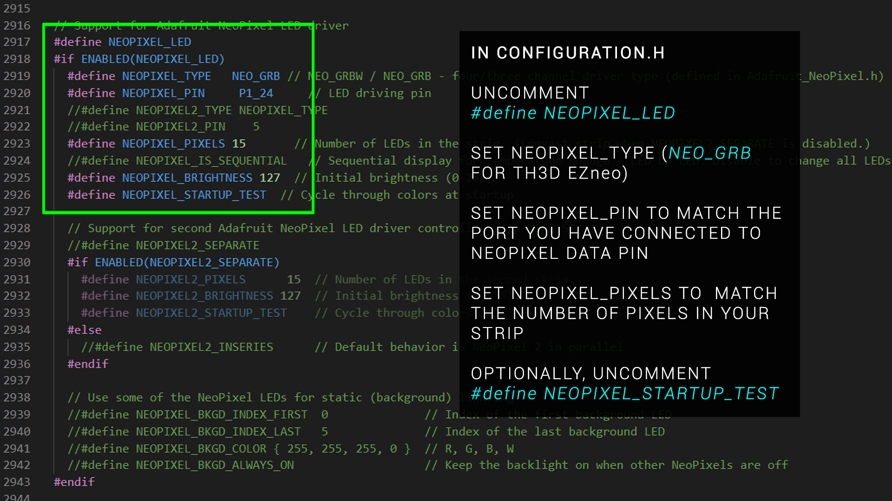Set the NEOPIXEL_PIN to suit your mainboard. I set my pin to P1.24 after referencing the SKR E3 Turbo pinout diagram.
NEOPIXEL_PIXELS should be set to match the length of your Neopixel strip.
NEO_GRB is the correct NEOPIXEL_TYPE setting for TH3D EZneo strip I used, but other options are available for other brands of Neopixels.
Uncommenting NEOPIXEL_STARTUP_TEST is recommended as it will flash three colours in succession when the printer first boots, indicating the Neopixels are connected and configured correctly.
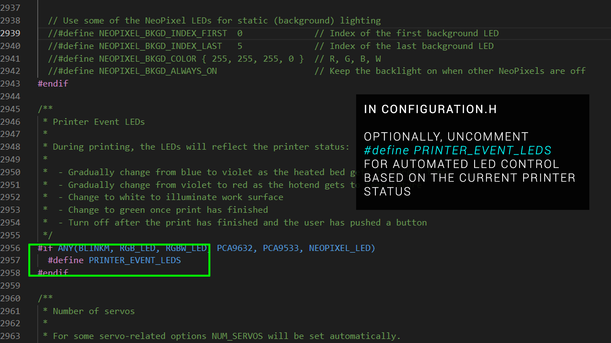By uncommenting PRINTER_EVENT_LEDS, the Neopixel strip will change colour automatically during print jobs as described in the firmware and demonstrated in the video.
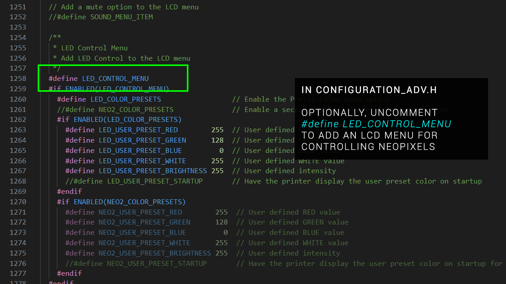By uncommenting LED_CONTROL_MENU, if you are using a Marlin LCD a new menu will appear to control the Neopixels as demonstrated in the video.
Compile the firmware and flash it to the mainboard.
Klipper Neopixel setup
The required settings can be copied from the Neopixel section of the Klipper config reference, pasted into your printer.cfg and then modified to suit your setup.
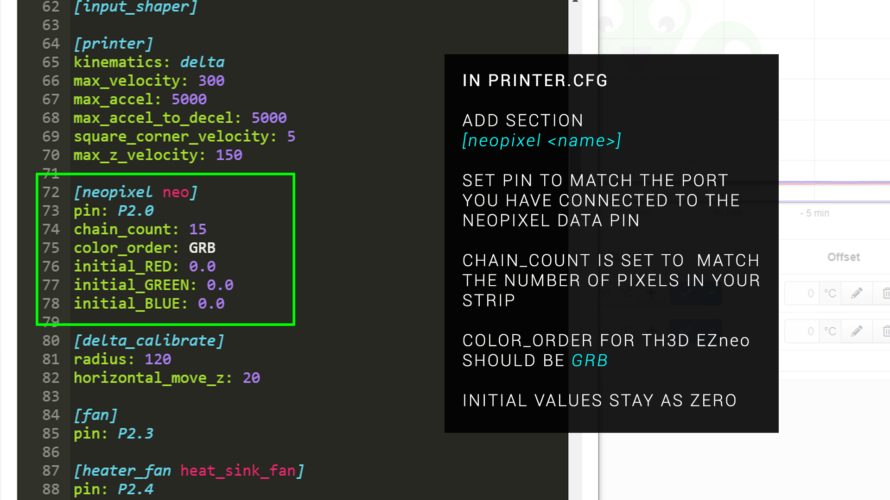The name after [neopixel is up to the user and should not contain spaces or start with a number. I used neo.
In the above example, I am using an SKR V1.3 board, which has no designated Neopixel port. I am therefore using the data pin from the servo port, pin 2.0 as seen on the pinout diagram.
chain_count should be set to match the length of your Neopixel strip.
GRB is the correct color_order setting for TH3D EZneo strip I used, but other options are available for other brands of Neopixels.
Save and restart Klipper.
RepRapFirmware Neopixel Setup
The required steps differ slightly depending on whether you are running RRF on Duet3D hardware or the TeamGloomy LPC/STM32 port. If using Duet3D hardware, your mainboard pin is preset and no additional data pin specification is required.
If you are using the TeamGloomy RRF port on LPC/STM32 hardware, you must specify the pin as follows:
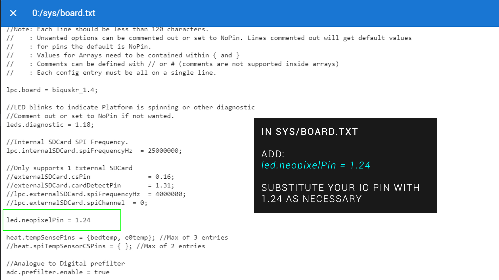In the above example, I used the default SKR V1.4 Neopixel pin which is labelled as 1.24 on the pinout diagram.
We now configure support for the Neopixel strip in config.g using M150:
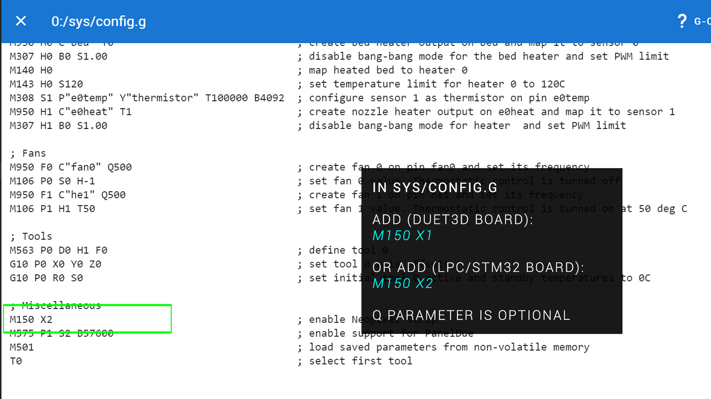If you are using an unusual brand of Neopixels, you may also need the Q parameter to set the SPI frequency. The Q parameter is not supported on the LPC/STM32 port of RRF. See further notes on compatibity here.
Save and restart the board.
Gcode Control
The following website may be useful when trying to generate RGB colour codes when programming Neopixels: w3 Schools RGB Calculator
For Klipper firmware, divide each colour value by 255 to bring it into the required range of 0.0 to 1.0.
It is not recommended to change the Neopixel strip during printing as this can potentially cause stepper movements to stutter. This will vary based on the firmware and hardware being used.
Marlin control
If you enabled PRINTER_EVENT_LEDS when compiling the firmware, once a print job starts the Neopixel strip will change colour automatically according to the printer status. If you enabled LED_CONTROL_MENU when compiling the firmware, you can also control the Neopixels from the new Lights LCD menu. We can also manually control the strip using the M150 gcode.
The key (but not all) arguments are as follows:
- R - Red value between 0 and 255
- U - Green value between 0 and 255
- B - Blue value between 0 and 255
- I - The address/index of the pixel to set the colour for (starting from 0). If this is omitted the entire strip will be set.
Example: Setting all LEDs in a 15 pixel strip to purple
M150 R255 U0 B255
This uses full red and blue with no green to make purple for all 15 pixels.
Example: Turn off all LEDs in a 15 pixel strip
M150 R0 U0 B0
Set groups of five LEDS different colours in a 15 pixel strip
M150 R255 U0 B0 I0 M150 R255 U0 B0 I1 M150 R255 U0 B0 I2 M150 R255 U0 B0 I3 M150 R255 U0 B0 I4
Here we set the first five pixels to red only. Note the index starts from zero and increases by one for each command. The strip will update after each command.
M150 R0 U255 B0 I5 M150 R0 U255 B0 I6 M150 R0 U255 B0 I7 M150 R0 U255 B0 I8 M150 R0 U255 B0 I9
Now we set the next five pixels to green only. The strip will update after each command.
M150 R0 U0 B255 I10
M150 R0 U0 B255 I11
M150 R0 U0 B255 I12
M150 R0 U0 B255 I13
M150 R0 U0 B255 I14
Finally, we set the last five pixels to blue only. The strip will update after each command.
Macros
Marlin supports user macros with the M810 to M819 gcode commands.
This would be an efficient way to use more complex RGB patterns with Neopixels and will be the subect of a future video.
Klipper control
Unfortunately, there is no automatic control of Neopixels in relation to the events and/or status of the printer. We must use the SET_LED command to set colour of the strip manually.
The key (but not all) arguments are as follows:
- LED - The name of the instance you setup in printer.cfg (eg. neo)
- RED - Red value between 0 and 1.0
- GREEN - Green value between 0 and 1.0
- BLUE - Blue value between 0 and 1.0
- INDEX - The address/index of the pixel to set the colour for (starting from 1). If this is omitted, the entire strip will be set.
- TRANSMIT - If TRANSMIT=0 is included, the command will be stored without the strip changing colour. When a SET_LED command is later sent without TRANSMIT=0, all buffered commands will be then executed and the strip will change colour.
Example: Setting all LEDs in a 15 pixel strip to purple
SET_LED LED=neo RED=1 GREEN=0 BLUE=1
This uses full red and blue with no green to make purple for all 15 pixels. This example, like the others, uses the name neo to match my configuration above. Substitute your own name as necessary.
Example: Turning off all LEDs in a 15 pixel strip
SET_LED LED=neo RED=0 GREEN=0 BLUE=0
Set groups of five LEDS different colours in a 15 pixel strip
SET_LED LED=neo RED=1 GREEN=0 BLUE=0 INDEX=1 TRANSMIT=0 SET_LED LED=neo RED=1 GREEN=0 BLUE=0 INDEX=2 TRANSMIT=0 SET_LED LED=neo RED=1 GREEN=0 BLUE=0 INDEX=3 TRANSMIT=0 SET_LED LED=neo RED=1 GREEN=0 BLUE=0 INDEX=4 TRANSMIT=0 SET_LED LED=neo RED=1 GREEN=0 BLUE=0 INDEX=5 TRANSMIT=0
We set the first five pixels to red, one at a time, specifying with INDEX. TRANSMIT=0 prevents the Neopixel strip from actually showing the change.
SET_LED LED=neo RED=0 GREEN=1 BLUE=0 INDEX=6 TRANSMIT=0 SET_LED LED=neo RED=0 GREEN=1 BLUE=0 INDEX=7 TRANSMIT=0 SET_LED LED=neo RED=0 GREEN=1 BLUE=0 INDEX=8 TRANSMIT=0 SET_LED LED=neo RED=0 GREEN=1 BLUE=0 INDEX=9 TRANSMIT=0 SET_LED LED=neo RED=0 GREEN=1 BLUE=0 INDEX=10 TRANSMIT=0
We now set the middle five pixels to green, one at a time, specifying with INDEX. TRANSMIT=0 prevents the Neopixel strip from actually showing the change.
SET_LED LED=neo RED=0 GREEN=0 BLUE=1 INDEX=11 TRANSMIT=0 SET_LED LED=neo RED=0 GREEN=0 BLUE=1 INDEX=12 TRANSMIT=0 SET_LED LED=neo RED=0 GREEN=0 BLUE=1 INDEX=13 TRANSMIT=0 SET_LED LED=neo RED=0 GREEN=0 BLUE=1 INDEX=14 TRANSMIT=0 SET_LED LED=neo RED=0 GREEN=0 BLUE=1 INDEX=15
We now set the final five pixels to blue, one at a time, specifying with INDEX. TRANSMIT=0 prevents the Neopixel strip from actually showing the change, until the final command, where it is omitted and the strip finally updates to show the complete pattern.
Macros
It's probably most efficient to set designated colour combinations ahead of time in macros. You can then call set colour combinations to indicate heating, printing, or job completion. To run a macro, simply enter its name in the terminal.
You can also enter the macro name in your slicer where you want the colour change to occur.
RepRapFirmware control
Unfortunately, there is no automatic control of Neopixels in relation to the events and/or status of the printer. We must use the M150 gcode to set the colour of the strip manually.
The key (but not all) arguments are as follows:
- R - Red value between 0 and 255
- U - Green value between 0 and 255
- B - Blue value between 0 and 255
- S - The quantity of pixels to set the colour for
- F - Follow on command. F0 indicates you are finished whereas F1 indicates you will be setting the colours of additional pixels with the next M150 command.
Example: Setting all LEDs in a 15 pixel strip to purple
M150 R255 U0 B255 S15 F0
This uses full red and blue with no green to make purple for all 15 pixels.
Example: Turn off all LEDs in a 15 pixel strip
M150 R0 U0 B0 S15 F0
Set groups of five LEDS different colours in a 15 pixel strip
M150 R255 U0 B0 S5 F1
Here we set the first five pixels to red only. Note the F1 argument to NOT close the command.
M150 R0 U255 B0 S5 F1
Now we set the next five pixels to green only. Note the F1 argument to NOT close the command.
M150 R0 U0 B255 S5 F0
Finally, we set the final five pixels to blue only. Note the F0 argument to close the command and change all of the colours.
Macros
It's probably most efficient to set designated colour combinations ahead of time in macros. You can then call set colours to indicate heating, printing, or job completion. To run a macro, use the M98 command. eg:
M98 P"/macros/neo-purple.g"
The M98 gcode can be inserted into your slicer as you please.